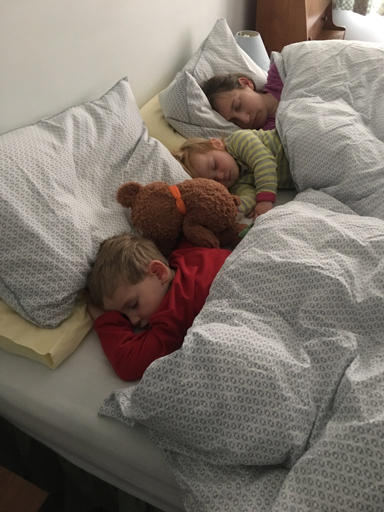
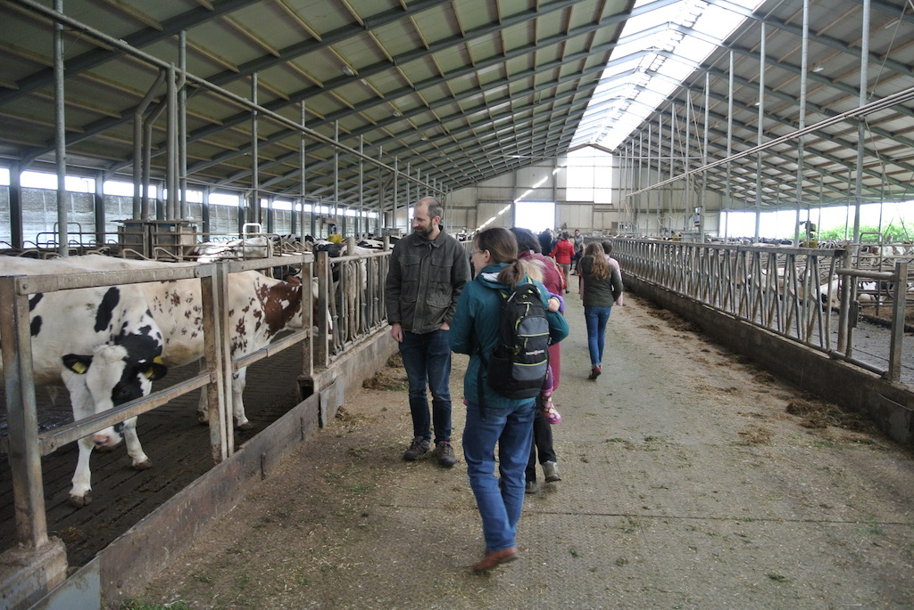
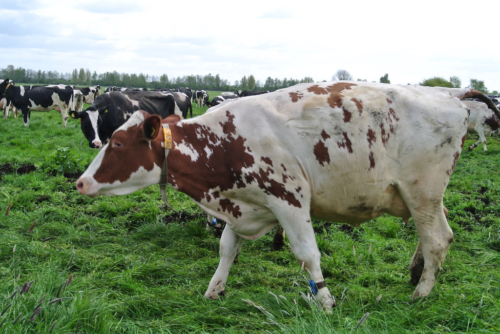
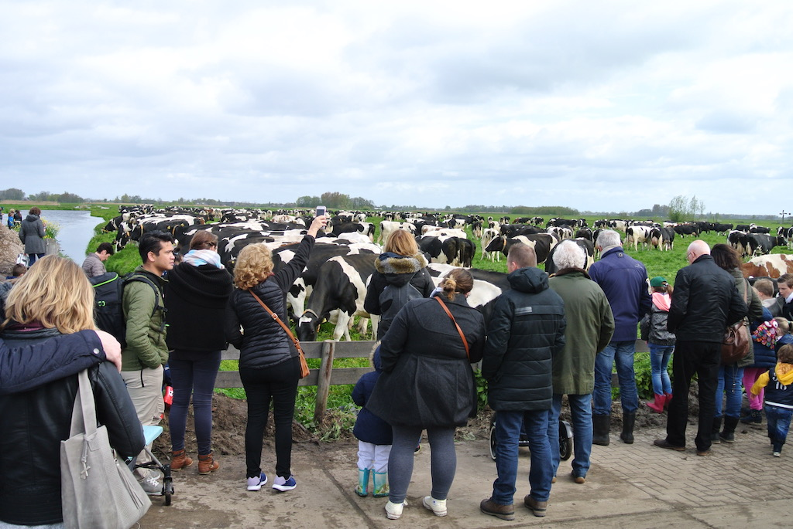
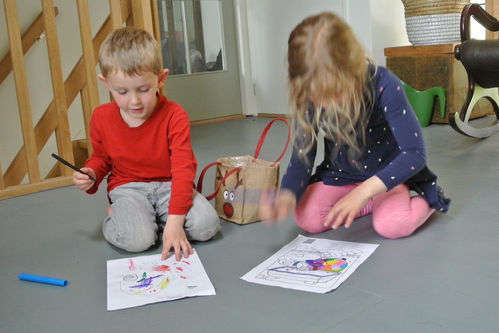
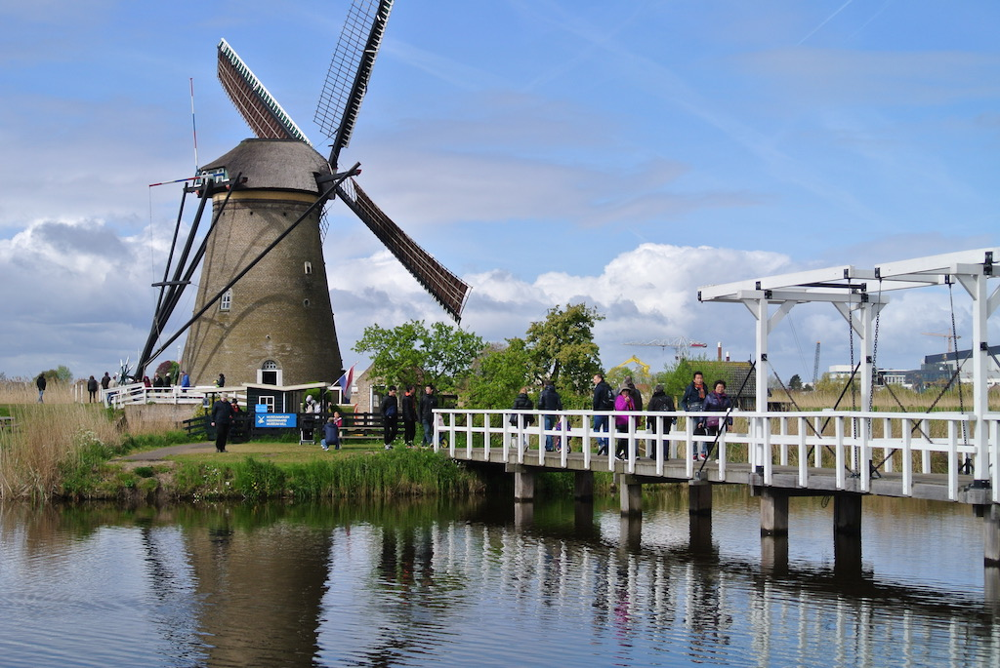
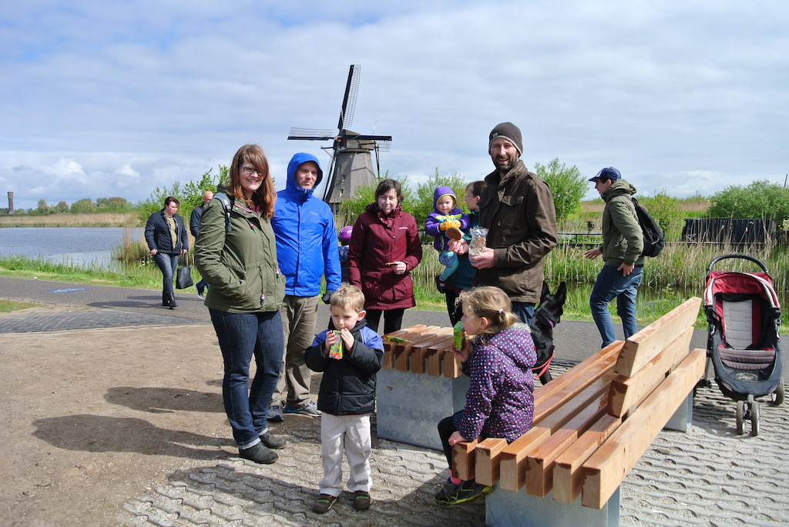
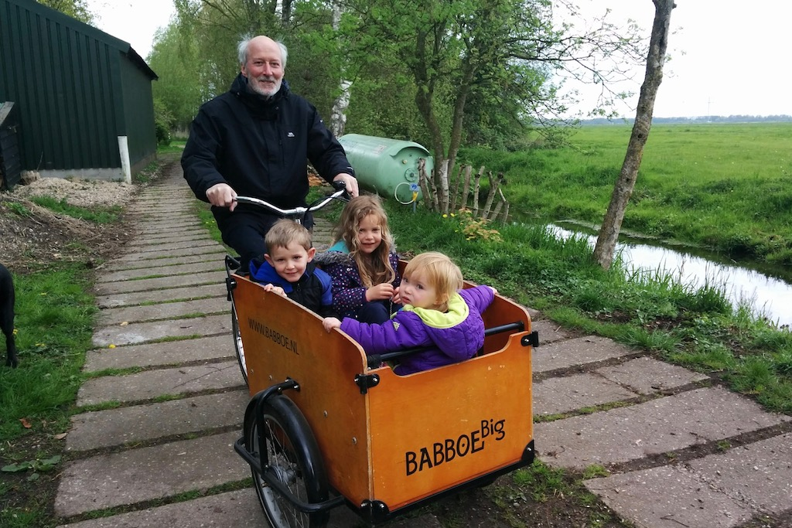
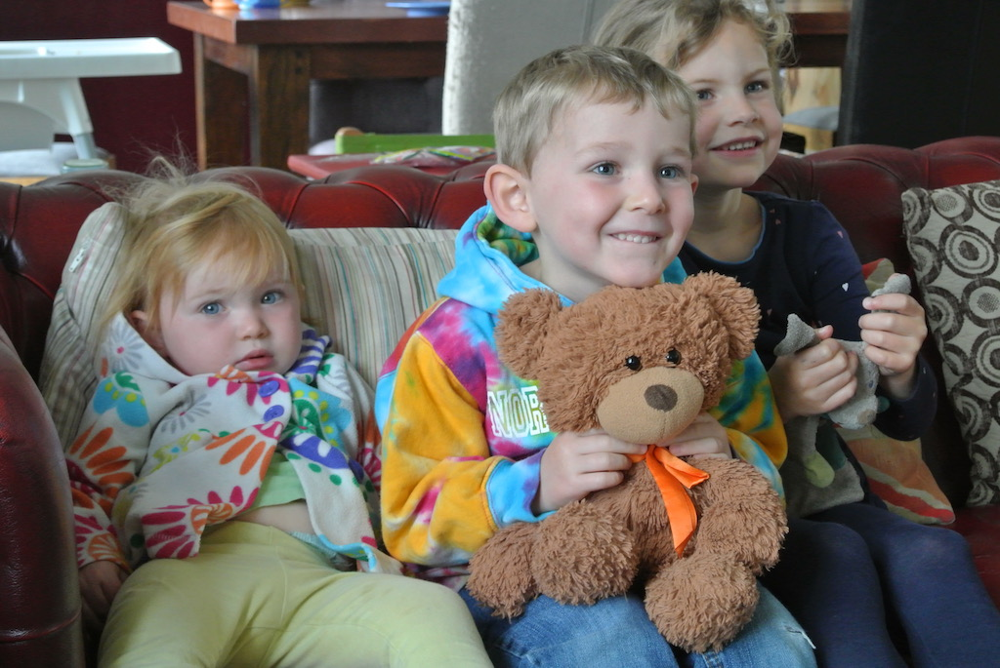
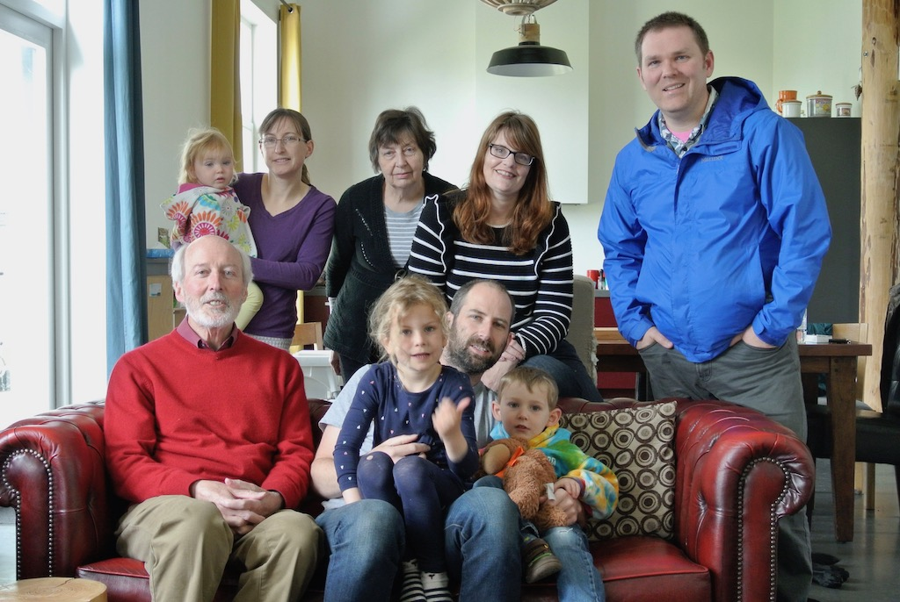

On Tuesday 18th April we picked up a hire car from Littlehampton and collected Victoria, Brandon, Austin and Juniper from Gatwick. They were here for three weeks, which was to include a few days in the Netherlands, visiting Krist, Paul and Rowan. Angela and I had made two short trips to Berkenwoude in July and November 2016, but this was the first time that we would all be together since our outing to Drusilla's Park at the end of May 2014. At least they had a few days to get over their jet-lag!
So on Friday 21st April we all set off for Gatwick to travel to Amsterdam Schiphol airport. Everything worked well and we were at Schiphol before Paul, who got stuck in a traffic jam. So we had something to eat while waiting for them. Austin and Juniper were pretty good the whole time. When they arrived we picked up a hire car and both cars set off for Berkenwoude. We got there at about 3:30. From then on we had coffee and cake, played games and had dinner.
We had a reasonable night's sleep, but were woken at 6:15 by Rowan! However, we managed to all get to a farm the other side of Berkenwoude to see all the cattle put out into the fields for the first time this Spring. There were lots of people and it was good fun.
After lunch some went for a walk with flo, while the rest of us did nothing. Then Greet and Wim came around.
On Sunday morning we headed for Kinderdijk. Actually we drove to Krimpen aan de Lek and cauught the ferry across the river to Kinderdijk, then walked a little way up the row of windmills. We were then back for lunch by about 1:30.
We played games in the afternoon before heading off for the pancake house at Krimpen aan den Issel, where we met Greet and Wim. We had quite a good meal (if you like pancakes) and got home about eight.
Monday was an exhausting day! Brandon was collected early to go to an interview, but the company took him to the site where he would be working (if he got the job) rather than to where the people were who were to interview him! So he spent another hour travelling. We spent the morning playing with Rowan, Austin and Juniper, including going out in the garden. After lunch, when Brandon arrived back, they went off to look at the area where the job is based while we looked after Rowan and Austin. That's why we were exhausted. After dinner we played yet more games.
On Tuesday morning we set off from Paul's fairly early (10:15), but still only just had time to get to Schiphol and through the system. We took our lunch on to the plane and then were home at about four. We then bought fish and chips from Shoreham.
© David James 2018 Last updated: 12th April 2018